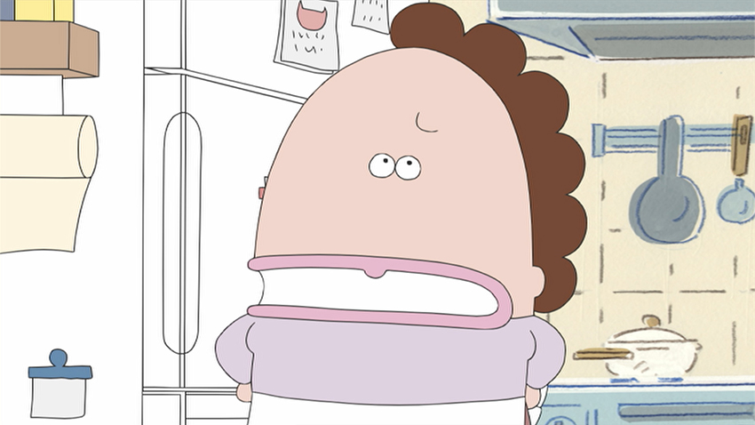
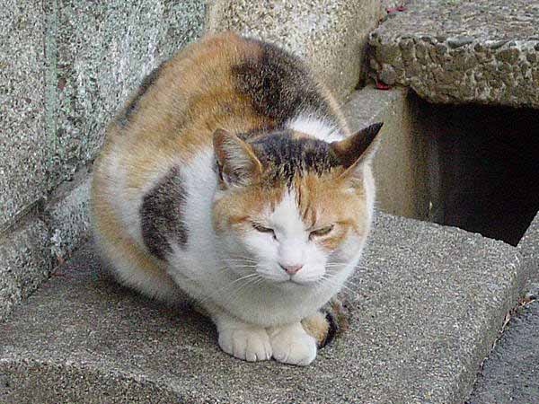

私の好きなもの・人☆彡
私の好きなもの・人☆彡
①あたしンち

ごはん関連の話大体面白くて特に好きです！新田と藤野と川島が好きです。藤野がランジャタイ国崎にしか見えない。
あとランジャタイのラジオすごく面白くてオススメです
②タイプロ
感動した!!全員合格してほしいぐらいいいです。寺西君良すぎる好きだ！！！！
sweetチームのパフォーマンスが一番好きです:-)ぜひ見て☆
③猫

かわいい飼いたい絶対大人になったら猫飼いたい。全部の柄好きだけど、三毛猫が一番好きです！
照山先生羨ましい！！